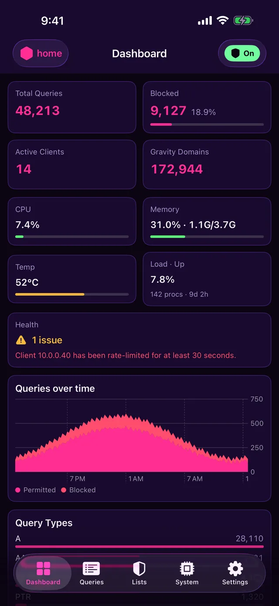

tihole
Pi-hole v6 remote control · iPhone and iPad
Your Pi‑hole,
in your pocket.
tihole is a native app for Pi-hole v6. Watch every DNS query live, swipe to allow or block a domain, pause blocking for a few minutes, and manage lists, clients, local DNS and every FTL setting, on as many Pi-holes as you run.
Free · iOS 17 or later · No accounts or tracking

01 · Screens
Every Pi‑hole screen, made for touch.
Real captures of the app, taken by its UI test against a mock Pi-hole. Not mockups.
02 · Get started
Three steps to your first Pi‑hole.
- 1Install tiholeFrom the App Store on iPhone or iPad (iOS 17 or later), or build it yourself from the source with Xcode.
- 2Create an app passwordIn Pi-hole's web interface, open Settings → Web interface / API and generate an app password.
- 3Add your Pi-holeGive it a name, its address and the app password. Add more Pi-holes any time from Settings.
Pi-hole
- Namehome
- Address https://pi.hole
- App password ••••••••••••
Use an app password from Pi-hole's web interface. It is kept in the Keychain on this device.
- Verify TLS certificate
- ✓ConnectedPi-hole v6 · gravity 172,944 domains · blocking on
03 · Numbers
Small app, whole Pi‑hole.
Tabs
5tabs
for all ten of the TUI's screens
Allow or block
1swipe
straight from the query log
Pi-holes
∞instances
switch from any tab
Tracking
0trackers
talks only to your Pi-holes
04 · Architecture
How it talks to Pi‑hole.
The same layering as the terminal app: the client knows nothing about the UI, and the UI never reaches past the client.
- ▤viewSwiftUI screensFive tabs. Load in
.task, poll only while visible and in the foreground. - ◎stateAppModelSaved Pi-holes, the active client, theme and blocking status.
- ⇄httpPiholeKitAn actor with one method per FTL endpoint. One shared login on a 401.
→taps
←json
←json
- ⌂apiPi-hole v6 · FTLThe official REST API at
/apiwithX-FTL-SIDsessions. - ⚿secureKeychainOne password per Pi-hole, this device only.
- ✓ciShipEvery TestFlight build has a GitHub build provenance attestation.
05 · Gestures
Where the TUI has keys, the app has swipes.
- ←QueriesSwipe a query leftAllow or block its domain
- ⏻Every tabTap the blocking pillDisable for 5, 10 or 15 minutes, or until you turn it back on
- ⌄Every tabTap the Pi-hole nameSwitch to another Pi-hole
- →Domains · adlists · groupsSwipe a rule rightEnable or disable it
- ←Lists · local DNS · clientsSwipe a row leftDelete it
- ↓Any listPull downRefresh
- ⌕Queries · FTL configSearchFilter domains or settings as you type
- ✕SystemSwipe a diagnosis messageDismiss it
07 · FAQ
Questions.
?Does tihole need Pi-hole v6?
Yes. tihole speaks the Pi-hole v6 REST
API and its sessions. It does not support the v5 API.
?How do I sign in?
With an app password from Pi-hole's web
interface. tihole keeps it in the iOS Keychain, on that device
only, and only ever sends it to that Pi-hole.
?What does swipe to allow or block do?
In the query log, swiping a query offers
Allow and Block. Each adds an exact rule for that
domain, the same call the web interface makes. Regex and
group-scoped rules are on Lists → Domains.
?Can I reach my Pi-hole away from home?
Yes, if your phone can reach it: over a VPN
such as WireGuard or Tailscale, by its LAN name or IP, over HTTPS
or plain HTTP. Self-signed certificates work once you turn off
"Verify TLS certificate" for that Pi-hole.
?Does it phone home?
No. There are no accounts, analytics, ads or
crash reports. The only traffic is to the Pi-holes you add. See
the privacy policy.
?Can I change the theme?
Gloss is the default. Settings also
has Deep Night, Light Luxury, Pi-hole Classic and Auto, which
follows the system. Try them with the menu at the top of this
page.
?Is there a terminal version?
Yes, it came first.
tihole is the keyboard-driven TUI this app
was ported from.
08 · Docs